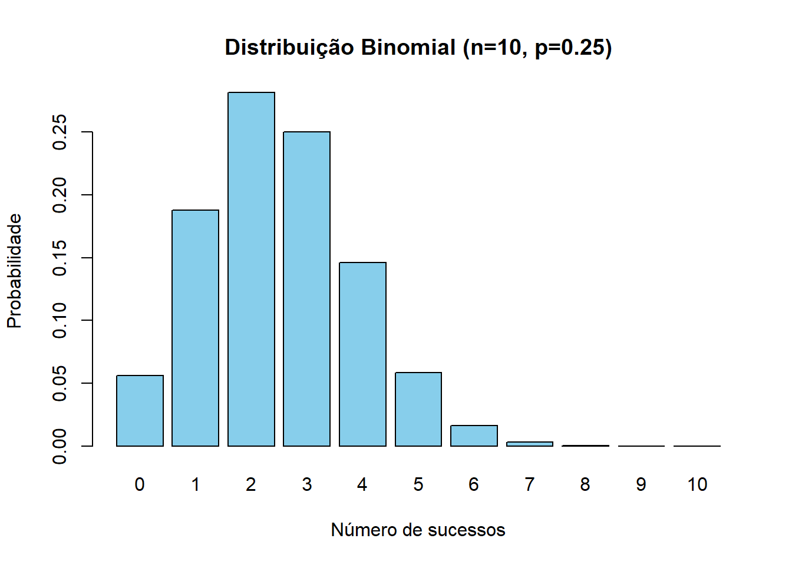
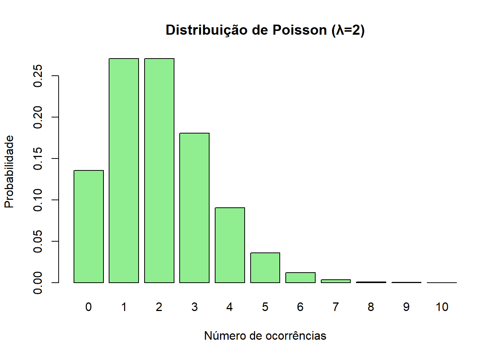
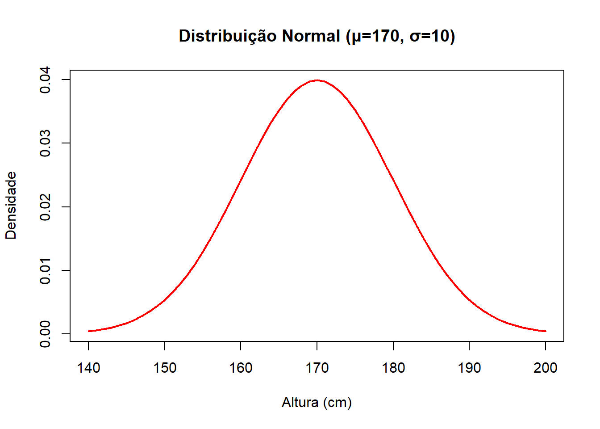

Código
dbinom(3, size = 10, prob = 0.25)[1] 0.2502823

Estatística e Probabilidade
Prof. Ben Dêivide (DEFIM/CAP/UFSJ)
A prática realizada tem como objetivo explorar e compreender o papel das distribuições de probabilidade na análise de fenômenos aleatórios, destacando especialmente as distribuições Binomial, Poisson e Normal. Essas distribuições permitem modelar situações em que há variabilidade e incerteza, fornecendo ferramentas matemáticas para estimar probabilidades e apoiar a tomada de decisões fundamentadas.
Em diferentes áreas acadêmicas e profissionais — como engenharia, ciências exatas, saúde e economia — compreender o comportamento de variáveis aleatórias é essencial para interpretar dados e prever resultados.
Neste relatório, serão apresentados exemplos aplicados de cada distribuição, com cálculos realizados de forma analítica e também com auxílio do software R e do pacote leem, reforçando a integração entre teoria e prática e permitindo visualizar os resultados de maneira clara e didática.
Compreender, aplicar e analisar as principais distribuições de probabilidade (Binomial, Poisson, Normal e outras), utilizando cálculos analíticos e ferramentas computacionais (R e pacote leem) para interpretar fenômenos aleatórios, relacionando-os com situações práticas da área de estudo e destacando sua relevância para a tomada de decisões.
Coletar dados experimentais de fenômenos reais ou simulados, a fim de observar a variabilidade natural e fornecer uma base para análise estatística.
Aplicar estatística descritiva para organizar, resumir e caracterizar os dados, permitindo identificar padrões e comportamentos iniciais.
Construir gráficos representativos das distribuições de probabilidade, facilitando a visualização e a interpretação dos resultados obtidos.
Calcular probabilidades de forma analítica e computacional, comparando os resultados teóricos com os obtidos via software, garantindo maior precisão e confiabilidade.
Interpretar resultados relacionando-os com aplicações práticas na área de curso, evidenciando como as distribuições podem ser utilizadas em problemas reais.
Discutir limitações e aplicações das distribuições estudadas, destacando em quais contextos cada modelo é mais adequado e quais cuidados devem ser tomados em sua utilização.
Tipo de variável: discreta (contagem de sucessos em n ensaios).
Exemplo aplicado: Em uma prova de múltipla escolha, a probabilidade de acertar uma questão é 25%. Qual a probabilidade de acertar exatamente 3 questões em 10 tentativas?
Cálculo analítico:
\[
P(X=3) = \binom{10}{3} \cdot (0.25)^3 \cdot (0.75)^7
\]
Cálculo em R:
dbinom(3, size = 10, prob = 0.25)[1] 0.2502823x <- 0:10
y <- dbinom(x, size = 10, prob = 0.25)
barplot(y, names.arg = x, main = "Distribuição Binomial (n=10, p=0.25)",
xlab = "Número de sucessos", ylab = "Probabilidade", col = "skyblue")
Tipo de variável: discreta (número de ocorrências em um intervalo).
Exemplo aplicado: Uma máquina apresenta em média 2 falhas por hora. Qual a probabilidade de ocorrerem exatamente 3 falhas em uma hora?
Cálculo analítico: \[ P(X=3) = \frac{e^{-2} \cdot 2^3}{3!} \]
Cálculo em R:
dpois(3, lambda = 2)[1] 0.180447x <- 0:10
y <- dpois(x, lambda = 2)
barplot(y, names.arg = x, main = "Distribuição de Poisson (λ=2)",
xlab = "Número de ocorrências", ylab = "Probabilidade", col = "lightgreen")
Tipo de variável: contínua (valores em torno de uma média).
Exemplo aplicado: A altura de estudantes segue distribuição normal com média de 170 cm e desvio padrão de 10 cm. Qual a probabilidade de um aluno ter altura entre 160 e 180 cm?
Cálculo analítico:
\[ P(160 \leq X \leq 180) = P\left(\frac{160-170}{10} \leq Z \leq \frac{180-170}{10}\right) \]
pnorm(180, mean = 170, sd = 10) - pnorm(160, mean = 170, sd = 10)[1] 0.6826895x <- seq(140, 200, by = 1)
y <- dnorm(x, mean = 170, sd = 10)
plot(x, y, type = "l", main = "Distribuição Normal (μ=170, σ=10)",
xlab = "Altura (cm)", ylab = "Densidade", col = "red", lwd = 2)
A prática foi desenvolvida em ambiente computacional utilizando o software RStudio e o pacote leem, que fornece funções específicas para trabalhar com distribuições de probabilidade.
Os passos seguidos foram:
dbinom, dpois, pnorm) e o pacote leem.Essa metodologia garante a integração entre teoria e prática, permitindo compreender como as distribuições de probabilidade podem ser aplicadas em diferentes contextos acadêmicos e profissionais.
dbinom(3, size = 10, prob = 0.25)[1] 0.2502823dpois(3, lambda = 2)[1] 0.180447pnorm(180, mean = 170, sd = 10) - pnorm(160, mean = 170, sd = 10)[1] 0.6826895Os cálculos analíticos e computacionais apresentaram valores consistentes, confirmando a validade dos modelos.
Os gráficos gerados no R reforçam a interpretação, permitindo visualizar a forma das distribuições.
Observa-se que cada distribuição é adequada para um tipo específico de fenômeno:
Binomial → eventos discretos com número fixo de tentativas.
Poissono → contagem de ocorrências em intervalos de tempo ou espaço.
Normal → variáveis contínuas com comportamento simétrico em torno da média.
As referências devem ser inseridas no arquivo referencias.bib e chamadas no texto da seguinte forma:
O estudo das distribuições de probabilidade permitiu compreender como diferentes modelos estatísticos podem ser aplicados para interpretar fenômenos aleatórios.
A utilização de cálculos analíticos e computacionais, por meio do software RStudio e do pacote leem, possibilitou comparar resultados teóricos com valores obtidos via simulação, garantindo maior precisão e confiabilidade.
Observou-se que cada distribuição possui características próprias e aplicações específicas:
Binomial → adequada para eventos discretos com número fixo de tentativas.
Poisson → útil para contagem de ocorrências em intervalos de tempo ou espaço.
Normal → fundamental para variáveis contínuas com comportamento simétrico em torno da média.
Além disso, a análise gráfica contribuiu para a visualização dos resultados, facilitando a interpretação e identificação de padrões.
Conclui-se que o domínio das distribuições de probabilidade é essencial para a tomada de decisões em diferentes áreas de estudo, reforçando a importância da integração entre teoria e prática no uso de ferramentas estatísticas.